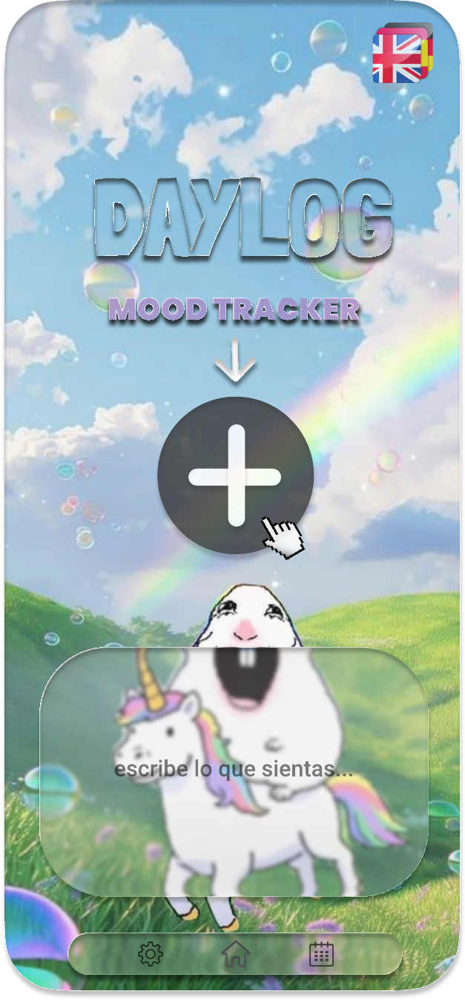
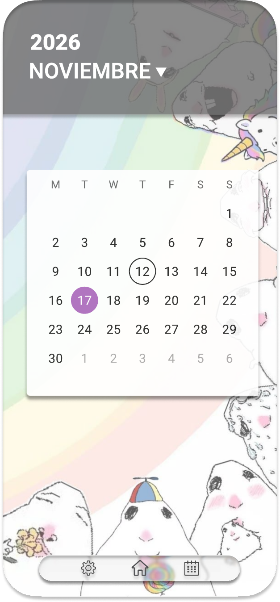

Conclusiones
- Se consiguió con éxito recorrer todo el proceso del proyecto: benchmarking, sketch, Figma, HTML y CSS
- El HTML sin CSS dejó claro qué es estructura y qué es estilo.
- Se pudo hacer un prototipo navegable de seis pantallas, de inicio a error
- Cada fase corrigió a la anterior: el benchmarking afinó el sketch, y Figma mejoró el sketch.
- Pensar en el usuario desde el principio ahorró cambios al final.

